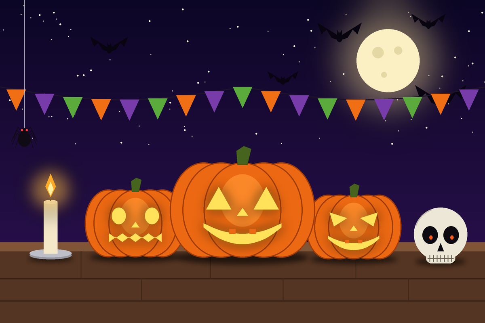

Ніч гарбузів, свічок і таємниць
Клікніть на великий гарбуз, череп або свічку — це активні області карти зображення.
Хеллоуін святкують у ніч на 31 жовтня. Його коріння сягає давнього кельтського свята Самайн, коли, за повір’ями, межа між світом живих і світом духів ставала тонкою.
Головним символом свята є гарбуз із вирізаним обличчям, у який кладуть свічку. Його називають «гарбуз Джека» (Jack-o’-lantern), а за легендою такий ліхтар мав відлякувати злих духів.
Оселі прикрашають павутинням, гірляндами з прапорців, кажанами та павуками. Обов’язковими деталями вважають свічки та, звісно, череп — давній символ таємниці й пам’яті про предків.
Сьогодні Хеллоуін — це ще й веселе свято для дітей і дорослих: костюми, вечірки, солодощі та конкурси на найстрашніший гарбуз.